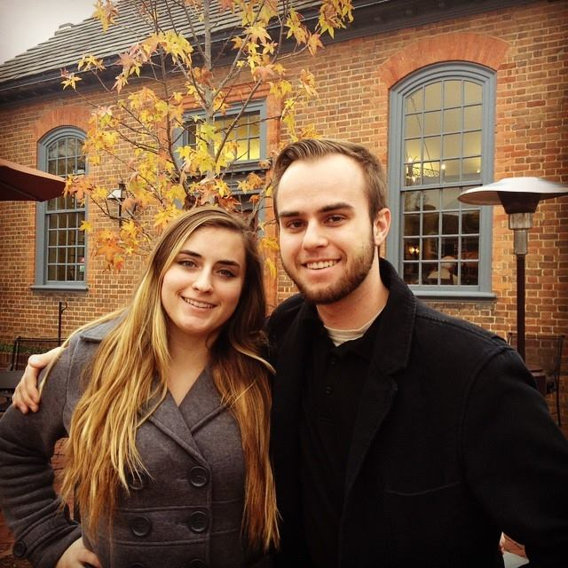

A journey of a thousand miles begins with a single step
My journey has modest beginnings in the Shenandoah valley, as a youth of Berryville, Virginia. After a quiet childhood, I graduated from the local high school in Spring, 2014, ready to take on the challenges of university life. I brought a limited knowledge of programming, but soon realized my passion, and my future, lied therein.
I am currently studying for a B.S. in Computer Science at the College of William and Mary, and I expect to graduate in Spring, 2018. I can be reached at richiebonett@gmail.com.
